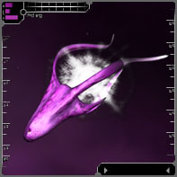

The ConfluxGood day, trooper. This is Tache Uzelin, Divisional Leader of the TRI Ministry of Defense. This is our latest defense briefing on the Conflux. These creeps blast our pilots, destroy our structures, and infest our jumpgates. Looks like we've got a war on our hands. Read up, then get out there and rip us some "Squid"! |
| Initial Contact |
|
A Solrain cargo convoy traveling through the Pulsar sector first encountered the Conflux. Needless to say this convoy was all but destroyed. Shortly after this incident, several more attacks took place - all within the vicinity of the Pulsar. Several squads gathered together and began to rip members of the Conflux. Debris was collected and handed over to TRI scientists.  Conflux kills continued to rise for several days, and many pilots spent countless hours in the cockpit attempting to rid space of this threat. Some daring pilots even managed to get close enough to scan members of the Conflux. It was noticed that several types of Conflux were active in space. Shortly thereafter all contact with the Conflux stopped. |
| The Conflux Return |
|
Some saw the departure as a sign of victory, but anyone who had engaged the Conflux in combat knew they would be back. Within a week of disappearing they returned. One of the first things that pilots noticed was an increase in the offensive response from the Conflux members. The Conflux also began popping up in sectors much further from Pulsar. Additional Conflux types began to appear, most stronger than the types first encountered. Much stronger. Members of the Conflux are easily identifiable by their distinct pink coloring and a white glowing orb, which appears to be some sort of power source or thruster. Examination of the recovered debris has revealed that the Conflux vessels are organic in nature, a technology that TRI does not possess. The Conflux do not jump through space like TRI vessels. Their means of jumping and locomotion are still being studied. Experience shows they can attack in any sector of TRI space, at any time. Analyses of debris, and of Conflux behavior, continue to this day. |
| Known Species |
|
TRI collects Conflux data on a per-type basis. Data on the individual Conflux types, or species, is available here. |
| Conflux Space and Swarms |
|
During 103.3, The TRI Research Division opened jumpgates into a new region of space. Reports on this event and some of its results are available here. Upon entry of our scouts and fighters into Conflux space, it became readily apparent that we had only seen the tip of the iceberg from the Conflux threat. Several new types of Conflux have been encountered, and information on their strength and behavior is still being assembled. A particularly deadly new Conflux behavior has been observed: "swarming". Conflux "swarms" are massive congregations of Conflux, utterly deadly to the lone pilot. They move from sector to sector, and pose a significant hazard to navigation. Fortunately, our jump-scrambler technology will surely keep them out of TRI space. Due to the hazard swarms pose, our sensor beacon system in Conflux space transmits regular warnings over an alert channel to all pilots. It is advised that all pilots stay closely aware of swarm movements in sectors near their flight path. Moreover, the Ministry of Defense has authorized payment of bounties to all pilots who participate in a swarm's destruction, in addition to the flux-kill bounties for the individual Conflux that make up the swarm. These bounties will only be awarded when the last Conflux in a swarm has been killed. Every pilot who killed one or more flux from that swarm will receive the award. |